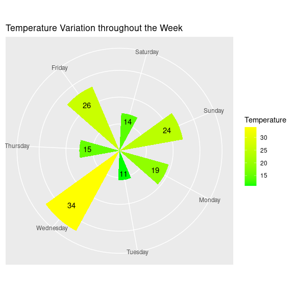

The primary goal of clockplot is to plot event time on a clock chart. Additionally it helps you make a day chart, week chart, or month chart, or plan events in those periods.
Installation
You can install the development version of clockplot from GitHub with:
# install.packages("pak")
pak::pak("mahmudstat/clockplot")Usage
Clock Chart
library(clockplot)
set.seed(10)
df <- tibble::tibble(hr = sample(0:23, 50, replace = TRUE),
mnt = sample(0:59, 50, replace = TRUE),
sec = sample(0:59, 50, replace = TRUE),
time = paste(hr, mnt, sec, sep = ":"),
value = sample(60,50))
p1 <- clock_chart_qnt(df, time, crit = value)
p1 + ggplot2::theme(legend.position = "right")+
ggplot2::labs(title = "Clock chart of random values")
Week Chart
set.seed(15)
wtemp <- sample(10:40,7)
week_chart(wtemp, high = "yellow", lgnm = "Temperature")
Functions
To know more about a specific function, use ?function_name
| Function | For | Remark |
|---|---|---|
| clock_chart() | Simplest Clock Chart with event times plotted on a 24-hour clock. | |
| clock_chart_col() | Clock Chart with hands colored based on a criteria. | |
| clock_chart_len() | Clock Chart with hands length modified based on a criteria. | |
| clock_chart_qnt() | Clock Chart with length modified and colored based on a criteria. | |
| clock_chart_qlt() | Clock Chart with hands colored by a criteria. | |
| cyclic_chart() | Plot task shown on each period. | |
| day_chart() | Rose plot with values shown at each hour. | |
| plan_day() | Rose plot showing tasks at each hour. | |
| week_chart() | Plot with values shown on each day of week. | |
| plan_week() | Plot with task shown on each day of week. | |
| month_chart() | Plot with values shown on each day of month. | |
| plan_month() | Plot with task shown on each day of month. | Yet to be ready |
| make_itinerary() | Plot showing tour or work plan on arbitrary time or date. | Yet to be ready |
| event_chart() | Plots a few random events on the clock. Give names and lines; Lines start where text ends | Yet to be ready |